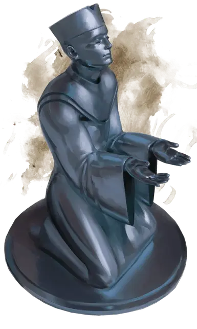

Символ Равенлофта
Icon of Ravenloft
Чудесный предмет, легендарный (требуется настройка существом с добрым мировоззрением)

Рекомендованная стоимость от 50 001 зм
Символ Равенлофта — это 12-дюймовая статуэтка, выполненная из чистейшего серебра, весящая 10 фунтов. Она изображает жреца, молящегося на коленях.
Символ передал Страду архижрец Кирил Ромулич, старый друг семьи, чтобы освятить замок и его часовню.
Находящиеся в пределах 30 футов от символа существа находятся под действием эффекта заклинания защита от зла и добра [protection from evil and good], действующего против Нежити и Исчадий. Лишь существо, настроенное на символ, может использовать прочие его свойства.
Гадание. Вы можете действием при помощи символа сотворить заклинание гадание [augury] без необходимости использовать материальные компоненты. Использовав это свойство, его более нельзя использовать до следующего рассвета.
Погибель для нежити. Вы можете использовать символ как святой символ при использовании умения «Изгнание нежити» или «Изгнание нечисти. При этом повысьте Сл спасброска на 2.
Лечение ран. Держа символ, вы можете действием излечить одно существо, которое видите в пределах 30 футов. Цель восполняет 3к8 + 3 хита, если оно не Нежить, Конструкт или Исчадие. Использовав это свойство, его более нельзя использовать до следующего рассвета.